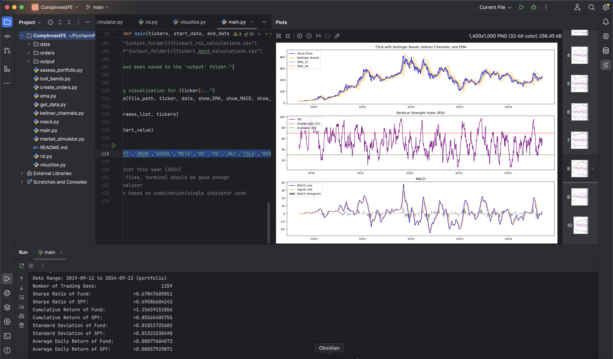

Stock Tracker
Stock tracker is a stock market simulator, visualizer, and strategy backtester using Python, Pandas, and Matplotlib. It uses the Yahoo Finance API to grab historical stock data, which the user can visualize over a timeframe with various indicators. The user may also backtest the portfolio with the market simulator, simulating trading costs and drawdown, using conditions involving metrics like RSI, MACD, and Bollinger Bands.
In the future, I plan to add a more user-friendly interface, and ML / optimization functions to pick stocks and optimize trading conditions.
 Check It Out on GitHub